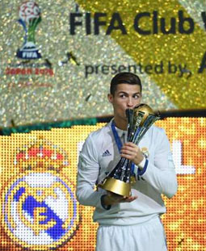
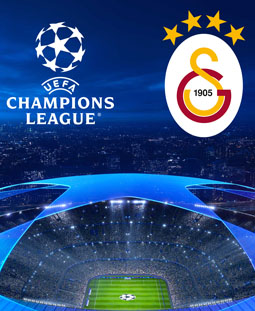
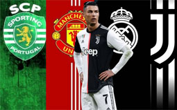
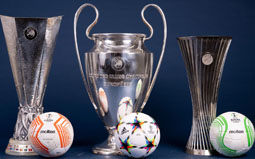

| Formación | Portafolio | Resumen |
|---|
Cristiano Ronaldo es uno de los mejores jugadores de la historia del fútbol. El portugués es toda una leyenda de todos los equipos por los que ha pasado, desde su salida del Sporting de Portugal hasta su llegada al Manchester United -primera etapa-, además de su amplio periplo en el Real Madrid y sus años en la Juventus de Turín.
En la recta final de su carrera ha decidido emprender la aventura de jugar en Arabia Saudí, en las filas de Al Nassr.
Además, es un histórico de la selección portuguesa, con quien ha logrado varias conquistas que sumar. A continuación, repasamos el palmarés completo de Cristiano Ronaldo.
| 5 Champions League |
 |
| 4 Mundiales de Clubes |
 |
| 3 Supercopas de Europa |
 |